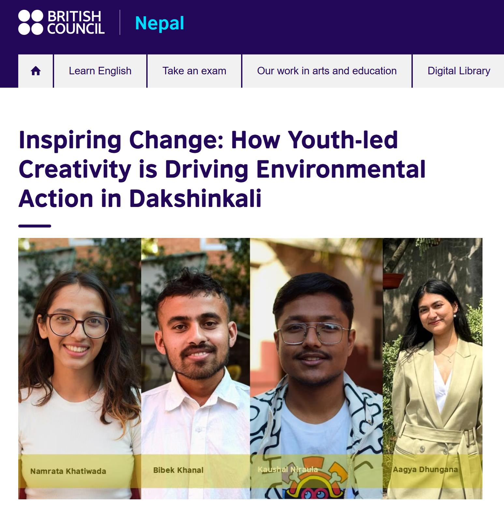

Climate Care Network: Building a Community for Climate Action
How It Started
Climate action can feel overwhelming when you try to take it on alone. In 2025, together with a group of professionals from very different backgrounds — forestry, environmental science, geomatics engineering and law — we decided to build something together. The Climate Care Network (CCN) was born out of that decision: an interdisciplinary organisation dedicated to climate action, environment protection, and educating the next generation about why it all matters.
What set CCN apart from the start was the deliberate mix of disciplines. We believed that climate problems don't fit neatly into one field, and neither should the people solving them. Bringing together a geomatics engineer, a forestry graduate,a lawyer, an environmental researcher, and a climate activist meant every idea got challenged, refined, and made better.
The Climate Creativity Contest
Our first major initiative was the Climate Creativity Contest in Dakshinkali Municipality, it was an inter-school competition that bought together students from grades 7 to 10 to engage with environmental issues through art, literature, and quizzes. We chose creativity deliberately. The contest drew 150 students, 80 of them young women, and sparked conversations in classrooms that had never had them before.
The ripple effects surprised even us. Eco-clubs were established in participating schools. The local mayor praised the initiative and pledged to mobilise the clubs for ongoing environmental activities across the municipality. What started as a one-day contest became the foundation for something lasting.
Media Coverage by British Council Nepal
The British Council covered our work as part of their Youth for Climate Action programme documentation. The article below is their account of what we built — scroll through to read it in full.

What CCN Is Building Now
CCN is now a registered NGO, and the work has grown well beyond that first contest. We continue to run awareness campaigns, collaborate with schools and local governments, and build a network where professionals across disciplines can find each other and work together on real climate problems. The creative approach we pioneered in Dakshinkali is now a model we are taking to other municipalities.
What I learnt
Working across multiple people with diverse ideas and experience is gratifying and challenging at the same time. The challenge to turn these ideas into reality takes patience, respect and careful planning which i am learning. Through the organized programs, I learnt the power of young minds and the importance of bringing them into limelight.As learning continues in every step, we together are learning and finding ways to continue the momentum of similar programs and initiations that can cures earth; currently curing earth.